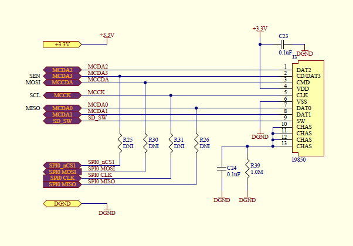

Memory
M2.0 offers 2 options for non-volitile memory: EEPROM and SD card.
eeprom
electrically erasable programmable read-only memory
M2 contains an EEPROM for non-volatile memory. Non-volatile means this data will not be erased when power is cut to M2.
The EEPROM is 32Kbits and controlled via I2C.
Here is the link to the datasheet: http://ww1.microchip.com/downloads/en/DeviceDoc/21713M.pdf
https://github.com/JChristensen/extEEPROM
microSD
M2 contains a microSD socket. Unlike most Arduino implementations of SD, we chose to employ the HSMCI (High Speed MultiMedia Card Interface) as the connection method. The result being both faster reading and writing, and freeing up the SPI interface for other fun stuff. If for some reason, SPI is needed, we did include some 0 ohm jumpers on the PCB to allow for SPI connection. These are left open by default.

For in-depth explaination of how the HSMCI works, refer to the SAM3X datasheet , starting on page 909.
Using the SD card slot on M2 is pretty straight-forward since all of complexities are abstracted through a library. That library and test code was put together for the RepRap project, found here: http://reprap.org/
Install
To get started using the SD card on M2, download these 2 libraries to your library folder:
https://github.com/macchina/M2_SD_HSMCI
- Download the files
- Move the folder to your Arduino Libraries
- Restart IDE
EXAMPLES
Several examples for using the SD card via HSMCI are included in the examples folder including:
DataLogger_difCreates file "data" in dir "0:" for logging raw data. Every time pushbutton is pushed, counter increment for 1 and number is logged into "data".DirManipulationcreates directory "TestDir", than renames it to "DirFiles" and deletes it.Dumpdata_SDtoSerialreading from SD and printing on SerialUSB.Dumpdata_SerialtoSDreading from SerialUSB and writing to file.FileListcreates files and writes to them, creates list of files, speed test.FileManipulationopen/create, close, rename, delete file.